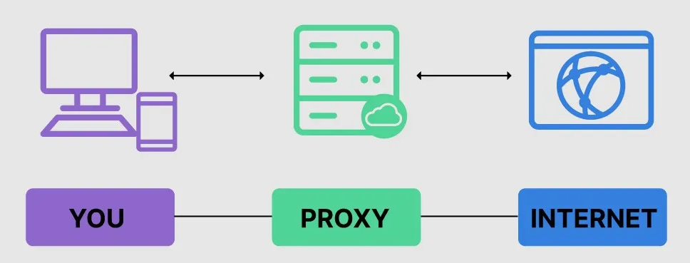
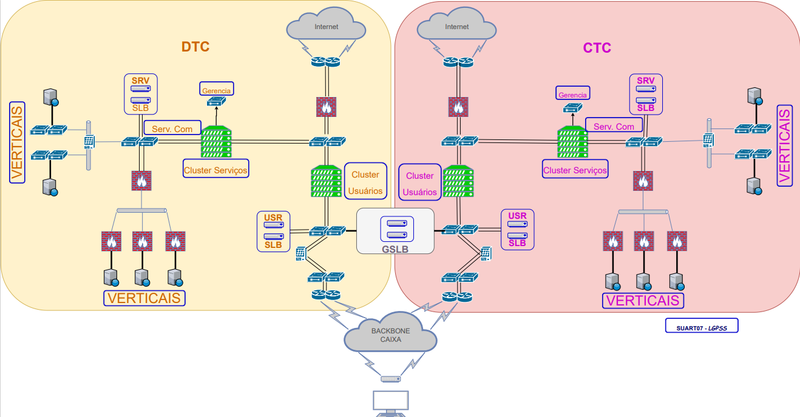

WEBProxy
Objetivo
- Este documento de arquitetura visa delinear os aspectos funcionais e organizacionais necessários para implantação de Solução de rede para conexão dos WEBProxies de forma a permitir o acesso à Internet por usuários e aplicações.
Tecnologias
Introdução
-
As tecnologias utilizadas nesta arquitetura são relacionadas às configurações básicas de rede e, portanto, não carecem de detalhamento amplo.
-
Por outro lado, cabe apresentar algumas técnicas sugeridas para adequação da solução sobretudo relacionadas a balanceamento.
Proxy / WebProxy
-
Proxy é um equipamento/software que atua como intermediário de conexão entre o usuário e os serviços/servidores que se encontram, normalmente, externos à rede do usuário / corporação.
-
A visão geral de conectividade via Proxy é apresentada na figura abaixo:

-
Por ser um intermediador da conexão, todo o tráfego do serviço passa pelo proxy e, com isto, podem ser observadas algumas vantagens da sua implementação, conforme segue:
-
Melhorar a segurança -- A solução pode efetuar o isolamento da rede e esconder a identidade do usuário;
-
Monitorar e Filtrar conteúdo -- Todo o tráfego acessado pelos usuários pode ser identificado e contabilizado, além do que é possível estabelecer quais serviços / sites poderão ser consultados por eles;
-
Filtrar conteúdo criptografado -- Uma vez que a conexão é feita entre o usuário e o proxy e do proxy ao servidor do serviço, é possível monitorar e filtrar conteúdo criptografado.
-
Melhorar o desempenho -- As soluções de proxy podem, ainda, efetuar cache de conteúdo e compactação o que trará uma percepção de melhora no desempenho dos acessos.
-
Balanceamento Global
-
O balanceamento global, conhecido pela sigla em inglês GSLB (global site load balancer) é uma técnica que permite a distribuição de tráfego/carga por servidores geograficamente distribuídos de formar automática.
-
Esta tecnologia pode trazer diversas vantagens para os serviços que o utilizam, tais como redução de latência, alta disponibilidade e menor consumo da infraestrutura. Além disto, nos casos em que a solução funciona de forma integrada com o balanceamento local SLB (server load balancer), é possível distribuir a carga dinamicamente de acordo com a capacidade disponível em cada localidade.
-
Tradicionalmente a solução de GSLB é implementada através da resposta de requisições de DNS, ou seja, ao receber uma consulta de DNS a solução de balanceamento global retorna o endereço virtual de uma localidade. Este endereço virtual se refere a um pool de servidores balanceados por uma solução de balanceamento local (SLB).
-
O recurso de GSLB é muito utilizado, também, agregado a soluções de georreferenciamento para a permitir que o encaminhamento do tráfego seja feito para o gateway mais próximo do usuário.
-
Para permitir o pleno funcionamento de aplicações que necessitam a manutenção das sessões em um mesmo servidor, o encaminhamento do tráfego deve garantir que conexões do mesmo usuário sejam encaminhadas ao mesmo gateway.
- Desta forma o balanceador global precisa fornecer mecanismos para controlar estes acessos de acordo com sua origem, em geral feita fixando-se o gateway para um dado IP de origem. Este processo é feito de forma dinâmica e é armazenada por um período determinado. Tal recurso é chamado de persistência.
Balanceamento Local
-
Enquanto o balanceamento global se destina a direcionar o tráfego para servidores / sites geograficamente dispersos, o balanceamento local é responsável pela distribuição do tráfego entre servidores dentro de um mesmo site.
-
Esta funcionalidade visa permitir a escalabilidade e disponibilidade do serviço otimizando a quantidade de requisições conforme a capacidade de cada servidor.
-
Existem basicamente dois tipos de balanceadores que operam em camadas diferentes do modelo OSI (Open System Interconnection).
-
Os balanceadores de camada 4, que efetuam sua distribuição de tráfego baseado em parâmetros disponíveis nos cabeçalhos da camada de transporte (TCP).
-
Os balanceadores de camada 7, que conseguem efetuar procedimentos de distribuição de tráfego bem mais avançados pois podem inspecionar as requisições fazendo o encaminhamento de acordo com o serviço acessado.
-
-
Os balanceadores dispõem de diversas técnicas de distribuição de tráfego sendo as mais conhecidas:
-
Round Robin -- Distribuição sequencial do tráfego pelo grupo de servidores.
-
Least Connections -- Nova conexão encaminhada para o servidor com menos conexões ativas
-
Least Time -- Uma fórmula na qual o tráfego é encaminhado para o servidor com melhor condição considerando tempo de resposta e número de conexões.
-
-
Da mesma forma como ocorre no GSLB, a distribuição de tráfego deve considerar mecanismos de persistência, garantindo que um acesso de um usuário a determinado serviço seja encaminhado através do mesmo servidor.
- Existem algumas técnicas para controle desta persistência, mas as que costumam apresentar melhores resultados estão relacionadas a controles de sessão ou cookies disponíveis em balanceadores de camada 7. As soluções que consideram apenas o endereço IP do usuário (balanceadores de camada 4) costumam falhar em virtude da flexibilidade que os usuários possuem atualmente em relação a mobilidade.
Encaminhamento de tráfego Internet via Proxy
-
O tráfego de saída para rede pública a partir de uma rede local com múltiplos hosts (estações de trabalho, servidores e dispositivos) requer a utilização de elementos intermediários que permitam a execução de funções de rede e segurança.
- Tais elementos são denominados de Proxy (procurador ou representante) cuja função é intermediar a conexão entre os equipamentos da Rede local com os servidores na rede externa.
-
Atualmente as soluções de Proxy agregam diversas funcionalidades úteis para as organizações que viabilizam um controle bastante apurado sobre este tráfego evitando fraudes, fuga de dados, acessos à sítios indevidos, dentre outros.
- Tais funcionalidades não estão no escopo deste documento de arquitetura de Rede, cuja finalidade é propor o modelo de interconexão destes equipamentos nos ambientes da Caixa de forma a aproveitar todo o seu potencial.
-
A estrutura de rede da Caixa foi pensada para evitar fuga de dados para a Internet (e acesso entrante da Internet para sua Rede Interna), desta forma não há roteamento Default para a Rede Pública.
-
No modelo conceitual original o roteamento interno é feito apenas para as subredes do segmento privado (10.x, 172.x e 192.168.x) que não são roteáveis na Internet.
-
Assim, para algum tráfego alcançar a Internet é necessário que o serviço seja fornecido por um intermediário (Proxy) que fará o encaminhamento de acordo com suas políticas.
-
Em geral, o host que desejar acessar um servidor na Internet terá que se conectar primeiro ao Proxy, se autenticar, e fazer a requisição do acesso desejado.
- Esse processo é conhecido como encapsulamento do tráfego uma vez que podemos considerar a existência de um túnel virtual entre o host e o Proxy.
-
Após este processo, o Proxy fará a conexão ao servidor da Internet usando seu próprio endereço e se passará pelo host original (porisso o nome Proxy - procurador ou representante).
-
-
Alguns serviços podem não funcionar adequadamente através de proxy, seja pelo volume ou tipo de protocolo.
-
Neste caso estão os serviços de tempo real, como vídeo chamada ou vídeo conferência, muito utilizados atualmente em decorrência das mudanças ocorridas nos últimos anos.
-
Como estes serviços demandam alta taxa de pacotes por segundo, o encapsulamento passa a não ser algo desejado uma vez que provoca aumento considerável de consumo dos hosts (e do proxy).
-
Desta forma, caso os equipamentos não sejam capazes de suportar toda a demanda, deve-se considerar um modelo sem túnel cuja solução requer a inclusão de roteamento na rede interna direcionando esse tráfego para o proxy.
-
PRINCÍPIOS
PRINCÍPIOS ARQUITETURAIS
-
A arquitetura do ambiente deve obedecer aos seguintes princípios:
-
Alta disponibilidade
-
Alto desempenho
- Baixa latência
-
Segurança
ALTA DISPONIBILIDADE
-
A solução deve permitir a implantação de conexões em pelo menos dois locais distintos.
-
Cada local deve possuir redundância de equipamentos.
ALTO DESEMPENHO: BAIXA LATÊNCIA
-
O acesso de sistemas deve ocorrer por equipamentos específicos que não sofrem interferência dos acessos de usuário.
-
As configurações devem ser otimizadas visando a redução de overheads.
SEGURANÇA
-
Quanto ao quesito segurança, deve-se considerar a utilização de acesso administrativo aos equipamentos segregado, identificado e devidamente registrado.
-
Os acessos dos usuários que utilizam a solução devem permitir o devido controle quanto as regras estabelecidas na política de acesso à internet.
ARQUITETURA DEFINIDA
Arquitetura macro

-
A figura acima apresenta as características lógicas de conexão à Internet fazendo uso de solução de WEBPROXY.
-
Esta arquitetura se baseia na separação destes acessos por duas estruturas de webproxy conforme o tipo de cliente da conexão.
-
Conexões efetuadas a partir de usuários serão encaminhadas através do pool de equipamentos denominados Cluster Usuários e as conexões provenientes de serviços/servidores farão uso do Cluster Serviços.
-
Tal separação visa garantir especialidade e capacidade para cada perfil de acesso, sobretudo considerando permitir que os acessos de sistemas críticos não concorram com acessos de usuários.
-
-
Sob a ótica de distribuição de carga a arquitetura propõe a utilização de balanceadores de carga global e local.
-
A conexão com o servidor do webproxy é feita através da resolução de nome (DNS) cujo FQDN correspondente deverá apontar para o VIP (Virtual IP) do balanceador local de cada sítio (CTC ou DTC).
-
O sítio de destino para onde será direcionado o respectivo tráfego seguirá políticas de balanceamento não escopo deste trabalho, podendo considerar a distribuição por origem ou outra que permita uma distribuição igualitária de tráfego.
-
Ainda em relação ao balanceamento global, deve-se considerar a identificação de capacidade disponível em cada sítio de forma a minimizar sobrecargas.
-
A solução deve considerar, também, a manutenção de um determinado cliente de conexão ao mesmo servidor de webproxy evitando falhas por quebra de sessão.
-
Isto deve se refletir nas políticas do balanceamento global bem como do balanceamento local.
-
No caso global sugere-se o uso de controle por IP de origem e tempo.
-
Para o balanceamento local pode-se utilizar outras técnicas tais como Session ID e cookie de conexão.
-
-
Office 365
-
Para melhor distribuição do tráfego pelos appliances de WEBPROXY É recomendável que o tráfego não WEB dos serviços do Office 365 também sejam encapsulados até estes appliances.
- Tal modelo permitirá a distribuição igualitária entre o pool de equipamentos e permitirá manter a rede interna sem roteamento explícito para a Internet.
-
Porém, caso o volume observado impeça este modelo de funcionamento, pode-se considerar o encaminhamento do tráfego sem encapsulamento, ou seja, usando-se by-pass diretamente no cliente.
-
Para que isto seja possível deverá ser incluído roteamento na rede Intranet para que os fluxos com destino aos servidores do Office sejam encaminhados via webproxy.
-
Não se trata da inclusão de rota default para toda a internet, deve-se considerar a inclusão apenas das subredes necessárias para o funcionamento da solução do office.
-
Atualmente estes fluxos são encaminhados através de balanceador específico, deve-se considerar sua migração para o webproxy evitando o uso de balanceador como proxy.
-
Considerações Gerais
-
A solução de conectividade com a Internet via WEBPROXY foi pensada para permitir conexões otimizadas, redundantes, de forma a melhorar a experiência do usuário e mitigar riscos.
-
Ressalta-se, porém, que a visão de futuro é buscarmos soluções de acesso à Internet distribuída de forma que tenhamos uma experiência melhor de navegação aproveitando os recursos atuais de disponibilização de conteúdo distribuído (CDN -- Content Delivery Network).
-
Enquanto essa realidade não de concretiza, deve-se seguir o modelo centralizado proposto nesta arquitetura de referência.
-
Quanto aos acessos à Internet provenientes de ambientes em nuvem, que não foram tratados nesta versão, serão incluídos na próxima revisão deste documento.
Histórico da Revisão
| Data | Versão | Descrição | Autor |
|---|---|---|---|
| 17/08/2021 | 1.0 | WEBProxy -- Solução de conectividade | Luiz Gilmar P de S e Silva |